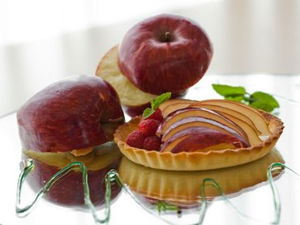

CULINARIA FELIZ
RECEITAS - Torta de maçã
Aprenda agora a fazer!
| Ingredientes |
| Trigo |
| Açucar |
| Maçã |
| Manteiga |
Modo de preparo
- Pegue todos os ingredientes e coloque no liquidificador
- Bata tudo por 5 minutos
- Coloque em uma forma untada
- Deixe na geladeira por 1 hora
- Sirva gelado!
Foto do prato!

VOLTAR
Todos os direitos reservados